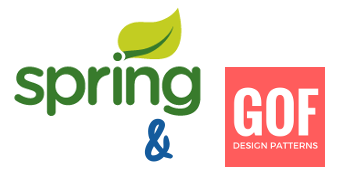

TASARIM ÖRÜNTÜLERİ İLE SPRING EĞİTİMİ
Bu eğitimde Java teknolojileri ile geliştirilen web tabanlı kurumsal
uygulama projelerinde son yıllarda yaygın biçimde kullanılan Spring Application
Framework, Spring Security Security Framework ve Spring WebServices Framework gibi
konuları GOF Tasarım Örüntüleri üzerinden anlatıyoruz. Eğitim sonunda GOF Tasarım Örüntüleri
ile ilgili çok farklı bir bakış açısına sahip olacağınıza ve Spring ekosistemindeki teknolojileri
kurumsal uygulama geliştirme faaliyetlerinizde çok daha etkin bir biçimde kullanacağınıza eminiz.
Eğitim İçeriği
- Tasarım Örüntülerine Giriş
- Strategy Örüntüsü
- Spring Application Framework’e Giriş
- Spring IoC Container ve Dependency Injection
- Creational Örüntüler
- Factory Method Örüntüsü
- Abstract Factory Örüntüsü
- Prototype Örüntüsü
- Singleton Örüntüsü
- Builder Örüntüsü
- XML Tabanlı Spring Container Konfigürasyonu
- Bean Oluşturma Yöntemleri
- ApplicationContext Kabiliyetleri
- Annotasyon Tabanlı Spring Container Konfigürasyonu
- Java Tabanlı Spring Container Konfigürasyonu
- Proxy Örüntüsü
- Template Method Örüntüsü
- Spring JDBC ile Veri Erişimi ve Transaction Yönetimi
- Spring ve Entegrasyon Birim Testleri
- Java Web Uygulamalarına Giriş
- Chain of Responsibility Örüntüsü
- Observer Örüntüsü
- MVC Mimarisel Örüntü ve Uygulamaları
- Web Uygulamalarında Container Konfigürasyonu
- Spring Web MVC Kabiliyetleri
- Spring Web MVC & REST
- Web Uygulamaları ve Entegrasyon Birim Testleri
- Web Uygulamalarında Java Tabanlı Konfigürasyon
- Mediator Örüntüsü
- Spring ve Event Yönetimi
- ApplicationContext Event Mimarisi
- Built-in ve Uygulamaya Özel Event Tipleri
- Anotasyon Tabanlı EventListener Tanımı
- Transactional EventListener Kabiliyeti
- Spring ve Güvenlik
- Spring Security’nin Özellikleri
- Spring Security Konfigürasyonu ve Filter Mimarisi
- Kimliklendirme
- Başarılı ve Başarısız Login Akışları
- Kullanıcı, Rol ve Grup İlişkileri
- Spring Security Domain Sınıfları
- Login Sayfasının Özelleştirilmesi
- Logout İşlemi
- CSRF Saldırısı ve Önlemi
- Spring Security CSRF Konfigürasyonu
- Kriptolu Şifrelerin Kullanılması
- Beni Hatırla Kabiliyeti
- Kullanıcı Oturumlarının Yönetilmesi
- Anonim Kimliklendirme
- HTTP Basic Authentication
- Yetkilendirme
- Yetkisiz Erişim Örneği
- Web Kaynaklarının Yetkilendirilmesi
- Yetkilendirmenin İşleyişi
- Expression Tabanlı Yetkilendirme
- Metot Erişiminin Yetkilendirilmesi
- Spring Security ve Entegrasyon Testleri
- Spring ve SOAP/WSDL Tabanlı Web Servisleri
- Contract First & Last Yaklaşımları
- Spring WS ve Contract First Yaklaşımı
- Data & Service Contract
- XML & XSD
- Spring WS MessageDispatcher Mimarisi
- Otomatik WSDL Publish
- Spring WS Endpoint
- İstemci Tarafında Spring WS Kullanımı
- WebServiceTemplate Konfigürasyonu
- WebServiceTemplate ve MessageSender
- WebServiceTemplate ve OXM
- WebServiceTemplate Kullanımı
- Web Service Çağrılarının Güvenliği
- Spring WS ve Spring Security Entegrasyonu
- Spring WS ve Basic Authentication Kullanımı
Eğitimin Süresi
Eğitim için önerilen süre 5 gündür. Eğitim boyunca konu anlatımları
lab çalışmaları ile desteklenmektedir. Lab çalışmaları katılımcılarla
birlikte gerçekleştirilmektedir.
Gereksinimler
Tasarım Örüntüleri ile Spring Eğitimi'ne katılacak kişilerin Java
Programlama Dili'ne hakim olmaları, Java ile tercih ettikleri herhangi
bir IDE içerisinde rahatlıkla kod yazabilir durumda olmaları, Java EE
teknolojilerine temel düzeyde aşina olmaları, web uygulama geliştirme,
HTTP gibi konularda pratik bilgi ve tecrübe sahibi olmaları eğitimden
maksimum ölçüde faydalanabilmeleri için önemlidir.
Bilgi ve İletişim
Eğitimimiz ile ilgili daha ayrıntılı bilgi almak, ekibinizin durumunu ve
ihtiyaçlarınızı konuşarak size en uygun eğitim içeriğini belirlemek ve
teklif almak için bizimle info@java-egitimleri.com
adresinden irtibata geçebilirsiniz.